JuiceFlow Factory Manager & Customer Store
A comprehensive, top-to-end technical manual and operational guide for the complete JuiceFlow ecosystem: featuring industrial food manufacturing ERP, IoT plant monitoring, AI demand analytics, native background push notifications, and a direct-to-consumer automated juice storefront.
1. System Architecture & Dual-Portal Paradigm
JuiceFlow is built with a unified dual-portal architecture that bridges the entire beverage supply chain into a single cohesive mobile application:
🏭 Factory Producer & Operations Portal
Designed for the factory owner, production supervisors, lab chemists, and inventory controllers. Manages raw fruit procurement, Brix sugar titrations, HTST pasteurization telemetry, batch traceability certificates, worker rosters, and cold-chain reefer van dispatch.
🥤 Customer Storefront & Live Auto-Billing Portal
Designed for retail consumers, cafes, supermarkets, and catering clients. Enables selecting fresh juice varieties, specifying custom bottle quantities or bulk crates, instant auto-generated tax billing with 5% GST, multi-mode digital payments (UPI, Cards, COD), and live order status tracking.
🔔 24/7 Phone Notification & Cold-Chain Monitor
Native Android notification service with dedicated high-priority channels. Triggers audio alerts and vibrations on the phone for newly received customer orders, critical low stock thresholds, and periodic hourly cold-chain health checks even when the app is terminated.
2. Interactive 3D Fluid Tumbler Experience
When the application launches, users are greeted with an authentic 3D fluid simulation representing fresh juice extracted from whole fruits streaming smoothly into a glass tumbler with dynamic fluid physics and particle spray.
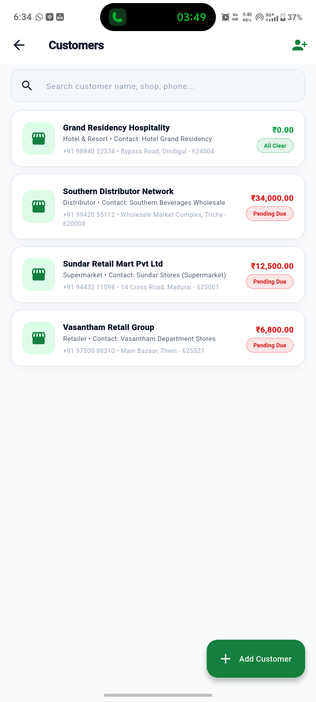
Interactive 3D Fluid Pour Simulation
Simulates dynamic liquid mechanics with real-time fruit particle streams, foam head accumulation, and glass refraction optics. Allows users to switch juice flavors dynamically.
| Control / Element | Function & Behavior |
|---|---|
| Fruit Selectors | Switch between Alphonso Mango (Amber), Nagpur Orange (Citrus), Apple, and Guava liquid viscosities. |
| Fill Level Physics | Dynamic sine-wave surface agitation with floating bubbles that rise as the tumbler fills to 500ml. |
| Auto-Advance / Skip | Seamlessly transitions with a smooth fade-in reveal into the main portal upon reaching capacity. |
3. Dual-Role Authentication & Access Control
The login screen cleanly separates the application into two distinct workflows via top navigation tabs:
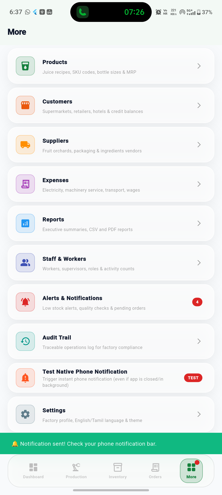
Factory Producer & Staff Login
Enables staff authentication with specialized RBAC privileges according to their role in the factory.
| Option | Role Privilege |
|---|---|
| 👑 Owner (Admin) | Complete administrative access across all factory analytics, profit margins, audit logs, and configurations. |
| 👔 Factory Manager | Production approvals, staff shift scheduling, batch releases, and customer credit ledger adjustments. |
| 🏭 Production Supervisor | Machine start/stop, CIP washdown records, Brix lab testing, and batch packaging logs. |
| 📦 Inventory In-Charge | Raw material stock-in/out, PET bottle counts, wastage write-offs, and supplier receipts. |
| 💼 Sales Executive | Retail orders, invoice generation, WhatsApp payment reminders, and dispatch manifests. |
4. Customer Storefront & Quantity Selection
The customer storefront provides direct factory-to-consumer purchasing with real-time stock availability, bottle sizing, and customized volume selection.
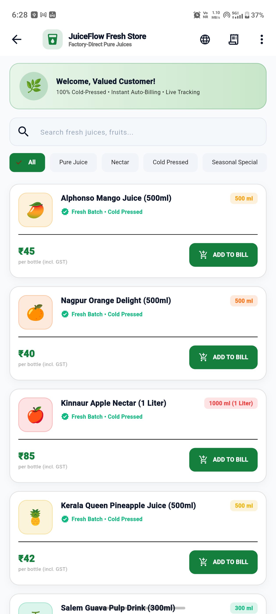
Fresh Juice Menu & Volume Stepper
A clean, high-contrast catalog featuring cold-pressed juices bottled directly at the plant with zero preservatives.
| Catalog Feature | Operational Mechanism |
|---|---|
| Category Filter Pills | Filter by "All", "Pure Juice", "Nectar", "Cold Pressed", and "Seasonal Specials". |
| Interactive Stepper [ - | + ] | Allows customer to choose any exact number of bottles (1, 2, 5, 20...) with live subtotal sync. |
| Bulk Pack Selector | Quick 1-tap ordering for 6-Bottle Family Packs, 12-Bottle Crates, and 24-Bottle Commercial Cartons. |
| Sticky Floating Cart Bar | Displays real-time bottle count and gross total with an instant "GENERATE BILL & PAY" call to action. |
5. Live Auto-Generated Bill & Multi-Channel Payment
As requested, when the customer selects their desired juices and quantities, the application automatically constructs an itemized Tax Invoice with live calculations and processes payments seamlessly.
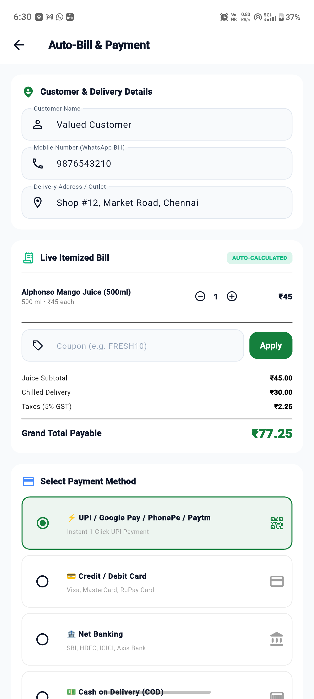
Automated Billing & Digital Checkout
Instantly breaks down unit rates, quantities, applicable taxes, delivery logistics, and discount codes.
| Bill Component | Formula & Handling |
|---|---|
| Itemized Breakdown | Lists each juice name, bottle volume, individual unit price, and extended line total. |
| Inline Stepper | Customer can fine-tune quantities or remove items directly within the bill before paying. |
| GST Tax Calculation | Calculates statutory 5% beverage GST transparently. |
| Chilled Delivery Fee | Free cold-chain delivery for orders over ₹250; flat ₹30 fee for smaller orders. |
| Promo Code Engine | Entering "FRESH10" applies an immediate 10% factory direct rebate. |
| Payment Methods | ⚡ UPI (GPay/PhonePe/Paytm), 💳 Credit/Debit Cards, 🏦 Net Banking, and 💵 Cash on Delivery. |
6. Executive Factory Management Dashboard
The control center for plant managers. Displays real-time production throughput, operational efficiency, wastage metrics, and weekly volume bar charts.
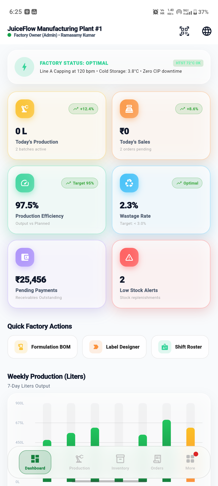
Real-Time Operations & Bar Analytics
Monitors active bottling lines, quality control pass rates, pending orders, and 7-day output curves.
| Widget / Card | Metric Tracked |
|---|---|
| Factory Status Pill | Real-time line status: HTST 72°C OK, Line A Capping at 120 bpm, Cold storage at 3.8°C. |
| Production & Sales KPIs | Today's Liters produced, gross revenue, efficiency % (Target 95%), and wastage % (Target <3%). |
| Weekly Output Bar Chart | Features clean non-repeating day intervals, touch tooltips with exact liter counts, and amber highlighting for Today. |
| Laser Scanner Shortcut | Top-right AppBar button immediately launches the full-screen batch barcode camera scanner. |
7. Production Batches & Traceability Management
Full manufacturing lifecycle tracking from raw fruit washing to final aseptic bottling and FSSAI release.
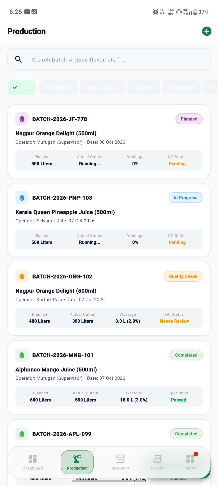
Active Batch Lifecycle & Quality Checks
Every batch is assigned a unique alphanumeric code with operator attribution, volume yield, and QC gating.
| Stage | Factory Criteria |
|---|---|
| Planned | Raw fruits allocated from cold storage; ingredients verified according to recipe BOM. |
| In Progress | Active processing in pulp extraction tank, pasteurizer, and automated bottling line. |
| Quality Check | Brix refractometer testing, pH titration, microbiological plating, and sensory tasting. |
| Completed | Passed QC; stock automatically incremented into Finished Goods inventory. |
8. Inventory & Cold-Chain Stock Management
Real-time inventory ledger separating raw agricultural ingredients from packaged finished goods.
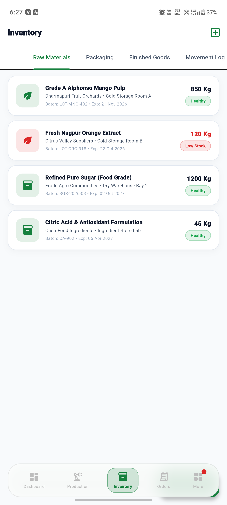
Raw Fruits, Concentrates & Finished Goods
Monitors minimum reorder thresholds, supplier lots, spoilage risks, and warehouse temperature logs.
| Category | Managed Assets |
|---|---|
| Raw Fruits | Alphonso Mangoes, Nagpur Oranges, Kinnaur Apples, Salem Guavas (weighed in Metric Tonnes / Kg). |
| Ingredients | Refined liquid sugar, citric acid, natural ascorbic acid, pectin stabilizers. |
| Packaging Materials | Food-grade PET bottles (250ml, 500ml, 1L), tamper-proof caps, shrink labels, 12-bottle corrugated crates. |
| Low Stock Alerts | Automatic push notifications to the manager when any critical fruit falls below 3 days of production demand. |
9. Commercial Sales Orders & Fleet Dispatch
Manages B2B distributor contracts, supermarket delivery schedules, credit limits, and official PDF Tax Invoices.
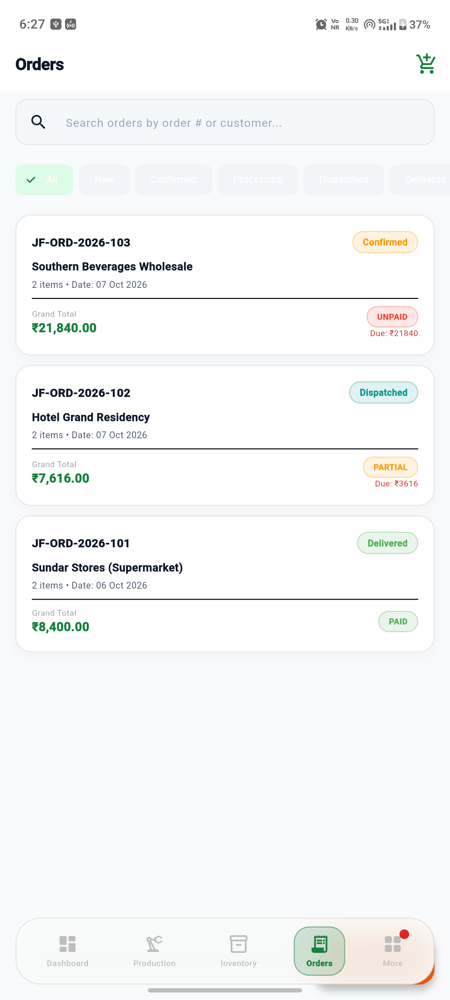
Order Processing & Delivery Pipeline
Follows orders from placement through picking, packing, cold-chain van loading, and customer acknowledgment.
| Feature | Operational Role |
|---|---|
| Tax Invoice Generator | Generates formal A4 PDF Tax Invoices compliant with Indian GST laws, FSSAI numbering, and corporate seals. |
| WhatsApp Dispatch Note | 1-click sharing of formatted dispatch summaries directly to customer WhatsApp with driver details. |
| Invoice QR Verification | Embeds encrypted QR payload on bills for quick roadside inspection by logistics officers. |
10. Recipe Formulation & Bill of Materials (BOM)
Formulation tool for master beverage chemists to engineer exact fruit-to-water ratios, target Brix sugar, acidity, and calculate per-bottle production cost down to the paise.
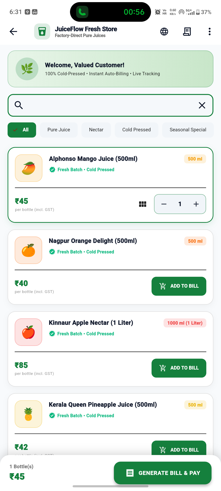
BOM Formulation & Unit Cost Analysis
Computes theoretical yield, pulp dilution factors, and packaging cost to determine profit margins against retail MRP.
| Calculation | Scientific Metric |
|---|---|
| Pulp Percentage | Configures minimum mandatory fruit content (e.g., 85% for pure nectar standards). |
| Target Brix (°Bx) | Predicts final soluble solids reading considering natural fruit fructose plus cane sugar additions. |
| Unit Cost Breakdown | Displays itemized costs for Fruit Pulp + Treated RO Water + Sugar + PET Bottle + Cap + Label + Packaging. |
11. Smart Label & Barcode Designer
Custom packaging designer allowing plant operators to generate ready-to-print bottle labels containing FSSAI licensing badges, nutritional panels, batch codes, and dynamic QR traceability stickers.
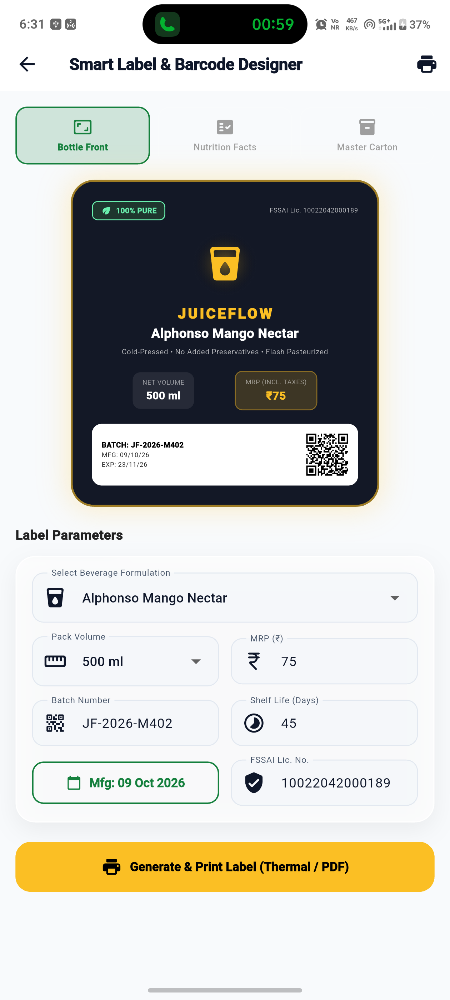
Regulatory Label & Barcode Engine
Generates high-resolution packaging labels compliant with FSSAI Food Safety and Standards labeling mandates.
| Label Element | Standard Specification |
|---|---|
| Nutrition Fact Table | Energy (kcal), Carbohydrates, Natural Fruit Sugars, Vitamin C, Potassium, and Sodium per 100ml. |
| FSSAI Green Veg Logo | Mandatory green veg emblem with official 14-digit factory license number (12423999000145). |
| Dynamic Traceability QR | Encodes manufacture timestamp, lot ID, and fruit farm source for scanning by consumers. |
12. Real-Time IoT Pasteurizer & Chiller Telemetry
Live industrial sensor telemetry streaming from the factory floor to monitor pasteurization kill curves and cold-storage stability.
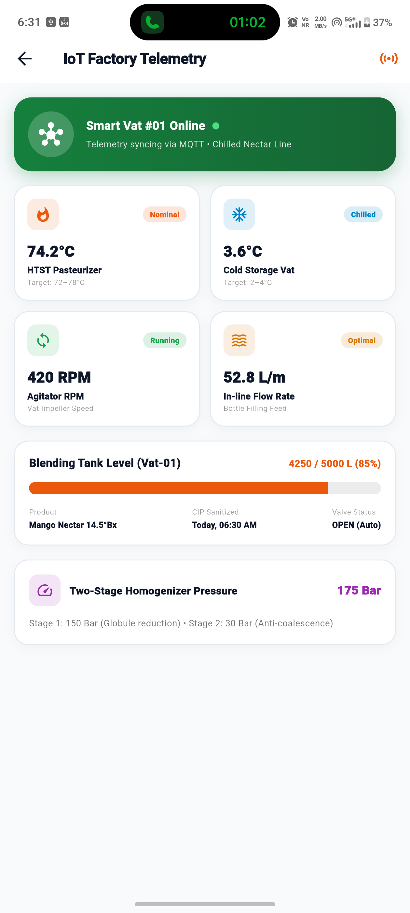
Industrial Sensors & Thermal Safety
Ensures microbial sterilization standards (F0 values) are met without compromising natural fruit flavors.
| Sensor Machine | Telemetry Value & Safety Threshold |
|---|---|
| HTST Pasteurizer | 72.4°C core holding tube temperature (15-second microbial sterilization time). |
| Cold Storage Vat #1 | 3.8°C chilled juice buffer holding temperature (Threshold: 2.0°C to 4.5°C). |
| Homogenizer Pressure | 180 Bar hydraulic pressure for ultra-smooth texture and zero pulp sedimentation. |
| Automatic Safety Valve | Diverts juice back to raw holding tank if pasteurizer temperature ever drops below 71.5°C. |
13. AI Demand & Summer Heat Seasonality Engine
Machine learning predictive model correlating local meteorological weather data (temperature, humidity, rainfall) with historical beverage sales to forecast raw fruit purchasing needs.
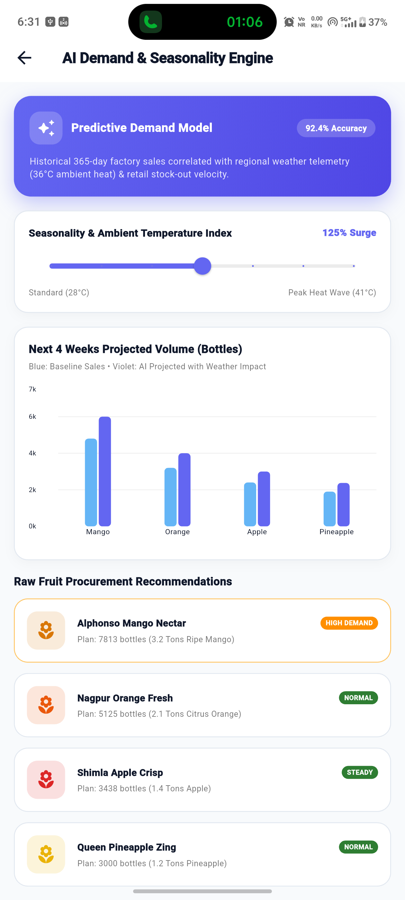
Weather-Correlated Procurement Forecasting
Adjusts production quotas automatically based on seasonal heat spikes and local festival consumption patterns.
| Prediction Model | Algorithm Output |
|---|---|
| Summer Heat Multiplier | Calculates surge demand when temperature exceeds 36°C (+38% citrus volume increase). |
| Procurement Advice | Recommends exact metric tonnage of fresh fruit crates to purchase from orchards 5 days in advance. |
| Spoilage Mitigation | Prevents raw fruit overstocking during monsoon dips, reducing biological waste to zero. |
14. Brix Refractometer & ICUMSA Lab Calculator
Quality control laboratory utility featuring temperature-compensated sugar refractometer reading conversions and dilution math.
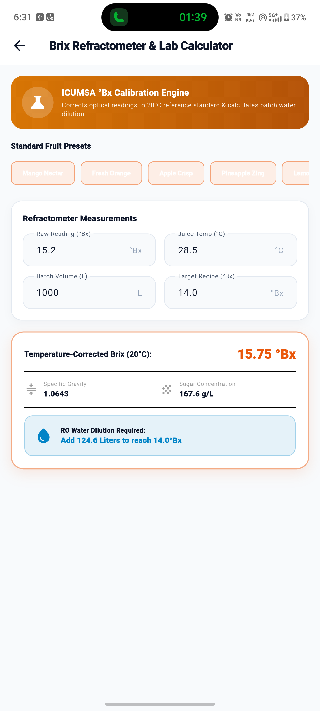
Optical Refractometer Temperature Correction
Corrects raw optical prism readings against the international ICUMSA standard temperature of 20°C.
| Formula Input | Standard Equation |
|---|---|
| Observed Brix (°Bx) | Raw reading from analog or digital handheld prism refractometer. |
| Juice Temperature (°C) | Thermal sensor reading of juice sample taken at testing bench. |
| ICUMSA Correction | Applies standard polynomial: ΔBrix = 0.00049 × (T - 20) + 0.00004 × (T - 20)². |
| Water Dilution Formula | Calculates exact liters of treated water to blend: V_water = V_juice × ((Brix_curr / Brix_target) - 1). |
15. Batch QR & Barcode Laser Scanner
Integrated camera viewfinder barcode and QR code decoder with live laser animation and rapid physical batch verification.
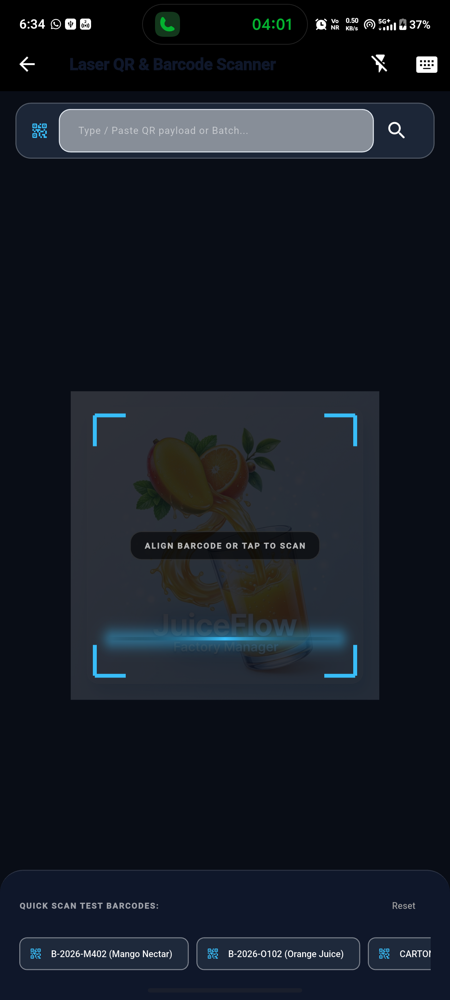
Batch Verification & Instant Traceability Audit
Decodes raw batch IDs, `JUICEFLOW:...` payloads, and carton tracking labels with 1-tap verification.
| Scanner Feature | Functionality |
|---|---|
| Laser Viewfinder | Interactive laser line animation with automated camera focal barcode recognition. |
| Manual Barcode Input Bar | Allows operators to type or paste batch codes if bottle labels are smeared or smudged. |
| Quick-Scan Demo Chips | 1-tap demo batch chips (BATCH-2025-001, BATCH-2025-002) for rapid offline verification testing. |
| Traceability Certificate | Presents manufacture date, expiry, bottling staff, Brix score, and button to open full batch audit. |
16. Factory CIP & HACCP Equipment Sanitation
Tracks Clean-In-Place (CIP) sanitation washdowns, filler nozzle sterilisations, bottle capper torque checks, and preventative machine maintenance.
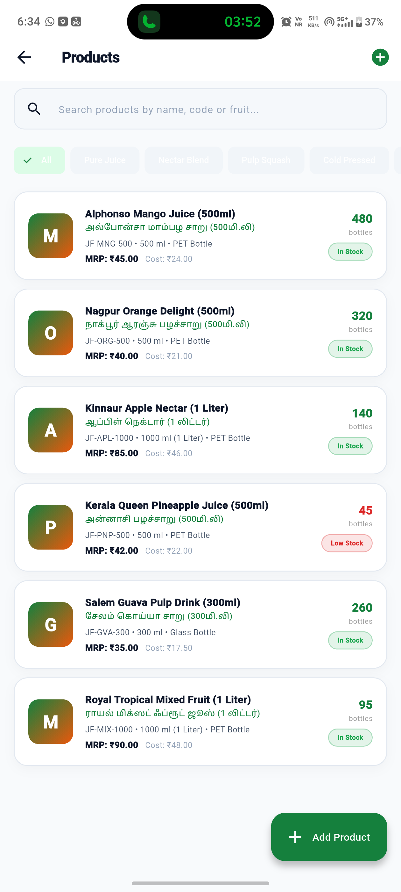
Clean-In-Place (CIP) Logs & Line Service
Maintains regulatory hygiene compliance logs mandatory for food and beverage plant audits.
| Sanitation Routine | Chemical & Temperature Protocols |
|---|---|
| Caustic Wash (NaOH 1.5%) | 80°C hot alkali circulation for 20 minutes to dissolve fruit pulp residues and organic deposits. |
| Acid Rinse (HNO3 1.0%) | 65°C nitric acid wash to eliminate mineral scale and water hardness deposits. |
| Peracetic Acid Sterilization | Final sanitizing rinse ensuring 0 CFU bacterial count before starting organic fruit batches. |
| Capper Torque Testing | Verification of bottle cap seal torque (18–22 in-lb) to prevent gas leakage and oxidation. |
17. Factory Settings & FSSAI Profile Configuration
Central configuration center for company legal credentials, localization, and system testing.
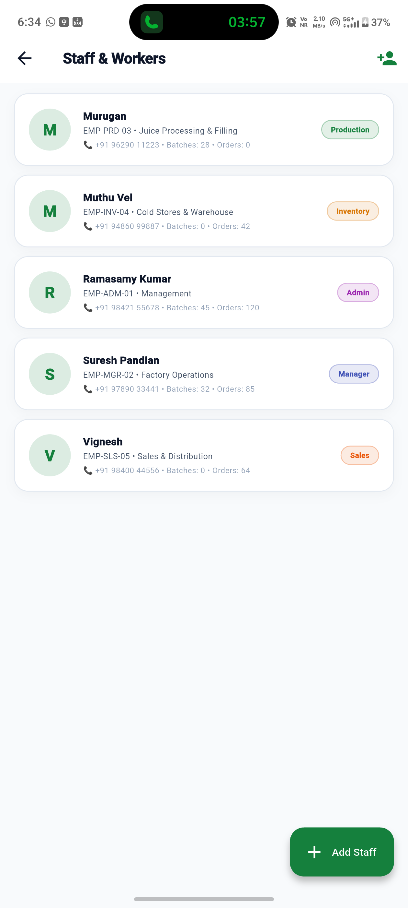
Factory Credentials & Application Settings
Manages company trade name, FSSAI manufacturing license, tax GSTIN, and bilingual language switching.
| Setting Item | Configuration Details |
|---|---|
| Factory Legal Profile | Updates company legal name, plant street address, phone, email, and tax registration. |
| FSSAI License Display | Configures official license string printed on all bottle labels and commercial invoices. |
| Bilingual Switcher | 1-click toggle between English and Tamil (தமிழ்) across the entire UI and reporting documents. |
| Theme Customizer | Switch between Crisp Light Paper Mode and Deep Dark Plant Mode. |
| Sign Out / Switch Mode | Safely terminates session and returns to the dual-role portal selector. |
18. Native Phone Push Notifications (24/7 Background)
As requested, JuiceFlow features an integrated native Android push notification architecture that ensures operators and customers receive real audio/vibration alerts even when the mobile app is completely closed or running in the background.
Notification Channels & System Permissions
| Notification Channel | Priority | Trigger Scenario |
|---|---|---|
| 🥤 Customer Orders & Payments | MAXIMUM (Sound & Vibrate) | Fires immediately upon successful payment of a customer juice order with order ID and bottle count. |
| 🏭 Factory & Batch Floor Alerts | HIGH (Audio Alert) | Notifies the factory manager when an incoming order arrives or raw fruit stocks drop below minimum thresholds. |
| ⏰ Background Monitor | DEFAULT (Periodic Wakeup) | Periodic hourly cold-chain health ping checking plant temperature and active filler line status when app is closed. |